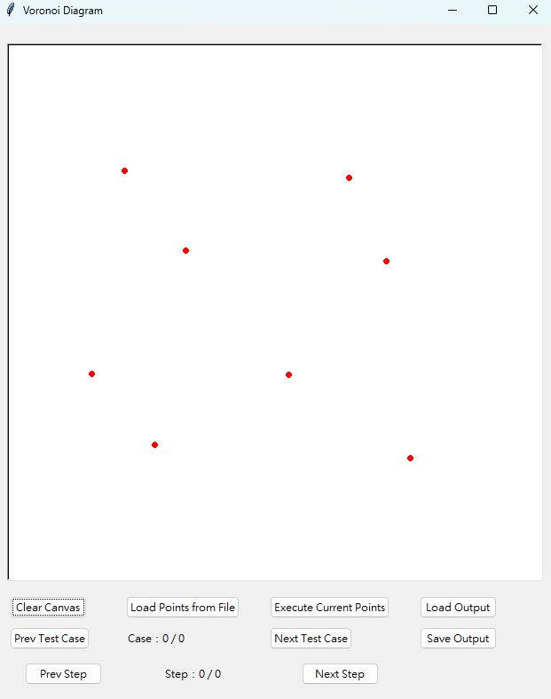
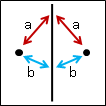

Voronoi Diagram 報告#
軟體規格書#
輸出與輸入（資料）規格
輸入： + 畫布上任意點擊，畫布大小為 602 x 602 + 輸入檔.txt，包含多筆測資與註解，輸入檔案範例 + 輸出檔.txt，直接在畫布中繪製線與點，格式如下方輸出檔案範例輸出： 輸出檔案格式如下：
+ 點：`P X Y` // 每個點佔一行，兩整數 x, y 為座標
+ 線段：`E X1 Y1 X2 Y2` // (X1, Y1) 為起點，(X2, Y2) 為終點，其中 `X1≦Y2` 或
`X1=X2, Y1≦Y2`
+ 點座標在前半段，線段在後半段，且以座標用字典序(lexical order)排序**輸出文字檔案範例：**
```
P 100 100
P 100 200
P 200 100
P 200 200
E 0 150 150 150
E 150 0 150 150
E 150 150 150 600
E 150 150 600 150
```
功能規格與介面規格
操作介面：
 圖1 初始狀況
圖1 初始狀況
 圖2 計算結果
圖2 計算結果
按鈕功能 + Clear Canvas：清除畫布上所有點與線段 + Load Points from File：讀取輸入文字檔 + Execute Current Points：計算當下畫布上的點 + Load Output：讀取輸出文字檔 + Prev Test Case：顯示上一筆測資 Next Test Case：顯示下一筆測資 + Save Output：輸出「輸出文字檔」 + Prev Step：合併步驟中的上一步 Next Step：合併步驟中的下一步
軟體測試規劃書
1 點：不做任何動作
2 點：找兩點的垂直平分線
3 點：找三點的外心，並以外心為為起點，往外畫出三條垂直平分線
4～6 點：Divide 及 Merge 一次
7～9 點：Divide 及 Merge 兩次
大於 9 點：Divide 及 Merge 三次 以上
軟體說明#
軟體安裝
下載程式壓縮檔
解壓縮後，點擊「dist」資料夾 後再點擊「index」資料夾
點擊「index.exe」執行檔 注意：勿移動/修改/刪除其他附加文件或檔案
使用說明
滑鼠點擊畫布
 圖3 點擊畫布
圖4 計算Voronoi Diagram
讀取 點座標檔案
 圖5 讀取點座標
圖5 讀取點座標
圖6 自動計算Voronoi Diagram
讀取 輸出文字檔
 圖7 讀取輸出檔
圖7 讀取輸出檔
 圖8 繪製點與線
圖8 繪製點與線
多筆測資
 圖9 第 12/20 筆測資
圖9 第 12/20 筆測資
 圖10 第 13/20 筆測資
圖10 第 13/20 筆測資
Step by Step
 圖11 第一步(merge前)
圖11 第一步(merge前)
 圖12 第二步(merge後)
圖12 第二步(merge後)
程式設計#
資料結構
Point+ `double x, y; //紀錄點座標
bool operator==(const Point& other) // overload 等於判斷
Point& operator=(const Point& other) // overload 指派
bool operator<(const Point& other) // overload 小於判斷
bool operator!=(const Point& other) // overload 不等於判斷
**Edge**+Point Start; // 線起點座標Point End; // 線終點座標
Point A; // 做中垂線的點 A 座標
Point B; // 做中垂線的點 B 座標
**Point / Edge vector**+vectormid_edge; // 紀錄HyperPlane的Edge vector
RightEdge; // 紀錄右邊的Edge vector
LeftEdge; // 紀錄左邊的Edge vector
voronoi; // 紀錄合併後的Edge vector
RightConvexhull; // 紀錄右邊的凸包 vector
LeftConvexhull; // 紀錄左邊的凸包`* ### 三個點以下 兩點+ 先找出兩點的中點，再找出中垂線 三點+ 找出三點的外心，再以外心為起點，往外畫出三條垂直平分線
直角、銳角、鈍角的外心位置不同，因此在畫線時需分開處理
 圖13 兩點的垂直平分線
圖14 三點的垂直平分線
超過三個點
流程 Sort：將點依照 x 座標排序，若 x 座標相同則依照 y 座標排序
Divide：將點分成左右兩邊，再遞迴處理左右兩邊的點
如果： 點數量 <= 3，則直接回傳垂直平分線
否則： Merge(將左右兩邊的結果合併)
虛擬碼
voronoi() { if(點數量 == 1) return; else if(點數量 == 2) return 兩點的垂直平分線; else if(點數量 == 3) return 三點的垂直平分線; else { L_Point = voronoi(L, M); // 左邊的點 R_Point = voronoi(M, R); // 右邊的點 return Merge(L_Point, R_Point); } }
**合併(Merge)** 找出左右兩邊構成的上切線，以此出發 途中撞到左右 Voronoi diagram ，就改變行進方向 清除多餘的 Voronoi diagram + Edge的起終點皆在Hyperplane的同一側(如：右側Edge的起終點皆在Hyperplane右側)，則不動作 Edge的起終點皆在Hyperplane的另一側(如：右側Edge的起終點其一在Hyperplane的左側)，則刪除 Edge的起終點在Hyperplane的兩側，則將另一側的點更改為相交位置  圖15 合併之前  圖16 合併過程* ### Convex Hull **透過 Voronoi diagram 尋找****(PPT. 4-37)** After a Voronoi diagram is constructed, a convex hull can by found in O(n) time. 若該 Edge 往外無限延伸，則組成該 Edge 的A、B點為 Convex Hull 的點  圖17 綠色 Edge 的A、B點為Convex Hull的點
軟體測試與實驗結果#
執行環境
- 作業系統：Windows 11 專業版 22H2 - 編譯器：g++ 14.2.0 / Python 3.12.2 - 硬體配置：R7 3700x / DDR4 3600MHz 8G*4 / RX6800XT
 圖18 執行環境
圖18 執行環境實驗結果
合併過程
 圖19 2點與2點合併
圖19 2點與2點合併圖20 2點與3點合併
 圖21 4點與5點合併
圖21 4點與5點合併圖22 合併結果
3 點以下
圖23 直角三角形
圖24 三點平行
4 ~ 6 點
 圖25 正方形 (水平+垂直)
圖25 正方形 (水平+垂直) 圖26 3點水平、2點垂直
圖26 3點水平、2點垂直7 ~ 9 點
圖27 隨機 7 點
 圖28 隨機 8 點
圖28 隨機 8 點10 點以上
圖29 隨機 12 點
 圖30 隨機 15 點
圖30 隨機 15 點
結論與心得#
初測
初測的內容較簡單，只有 1~3 個點，因此只需要直接計算就好。
較複雜的部份為三點時的處理，除了要找外心，還要判斷直角、銳角、鈍角的情況。
而在此階段還未使用到 Divide-and-Conquer，因此很容易忽略資料結構與演算法的設計，導致後續撰寫困難。
為了使 C++ 和 Python 打包成一個檔案，也讓我吃了不少苦頭。### 後測
如果程式只需要divide和merge一次，則狀況較單純，找到上切線後一直往下找即可
需注意的部分為左右的Edge與Hyperplane相交的位置相同。
當點數量超過6個時，狀況就變得極為複雜，有許多特例需要判斷和處理
只要有一步做錯，就會產生蝴蝶效應，而使其後續越錯越多。
因初測時未考慮後續的規劃，經常寫到一半才發現缺少某些資料或資料結構設計不佳，為此也付出了慘痛的代價(重寫4、5次)。### 結論 / 心得
在寫程式之前，需要詳細規劃每一個步驟，避免後續的困難。
發現程式碼有缺漏或方向不對時，有些時候砍掉重寫會比Debug或彌補過錯來的快。
當merge的過程出現錯誤時，很難馬上找到問題點，必須要逐行註解慢慢排除，這個過程也是十分煎熬。